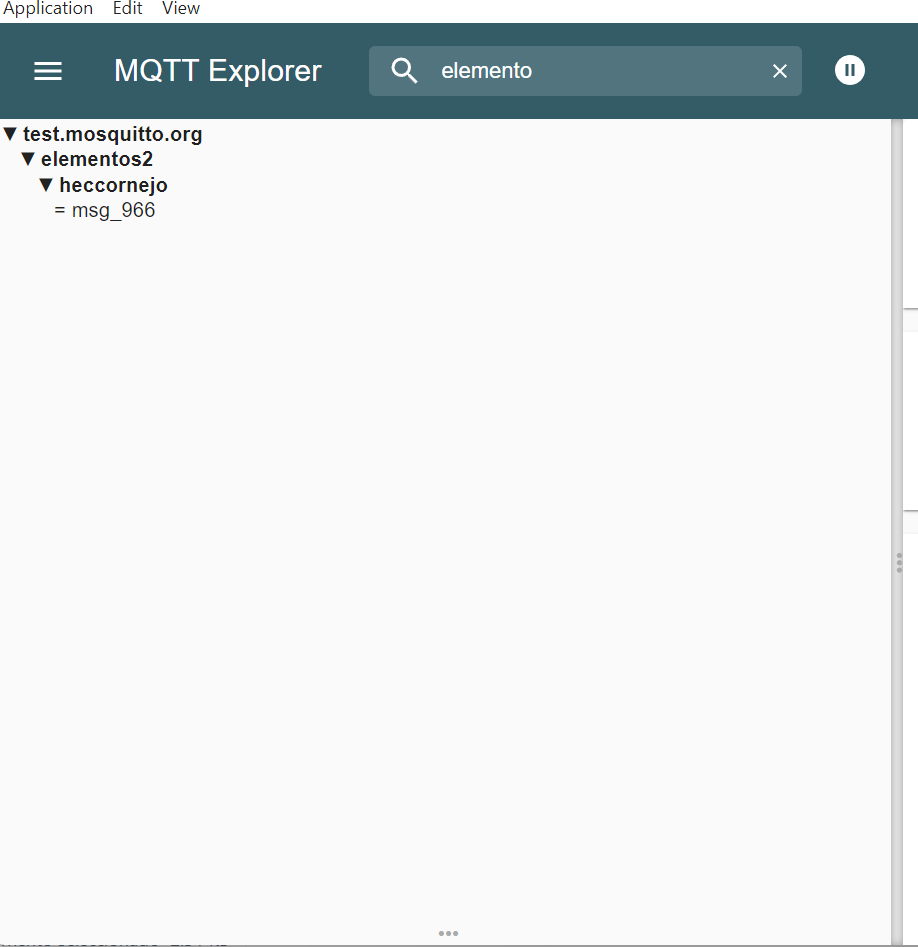

Portafolio de Actividades
Elementos programables II
Departamento de Ciencias e Ingenierías | Universidad Iberoamericana Puebla, México.
MQTT

- Resumen -
En esta práctica se implementó la comunicación entre dispositivos mediante el protocolo MQTT (Message Queuing Telemetry Transport), una herramienta fundamental en aplicaciones de Internet de las Cosas (IoT) por su eficiencia, bajo consumo de recursos y arquitectura basada en el modelo publicador/suscriptor. Se desarrollaron tres programas distintos: el primero consistió en un código que permitía enviar datos a un servidor MQTT (broker), entendiendo así el proceso de publicación en un tema específico y la estructura del mensaje. El segundo programa permitió que el dispositivo actuara como receptor de datos, es decir, como suscriptor que se conecta al broker y recibe información publicada por otros dispositivos. Finalmente, se creó un código combinado que envía y recibe datos, permitiendo una comunicación bidireccional dentro del ecosistema MQTT. A través de estas pruebas, se comprendió el flujo de datos en un entorno distribuido, la simplicidad de implementación del protocolo, así como su utilidad en sistemas que requieren transmisión eficiente, escalabilidad y bajo consumo energético, características clave en entornos IoT.
- Introducción -
MQTT (Message Queuing Telemetry Transport) es un protocolo de comunicación ligero y eficiente, diseñado específicamente para la transmisión de datos en redes con recursos limitados o donde se requiere bajo consumo de energía, como es común en aplicaciones de Internet de las Cosas (IoT). Su funcionamiento se basa en una arquitectura de tipo publicador/suscriptor, donde los dispositivos no se comunican directamente entre sí, sino a través de un servidor intermediario llamado broker. En este modelo, los dispositivos que envían información se denominan publicadores, y los que reciben datos se conocen como suscriptores. Ambos interactúan mediante temas (topics), que funcionan como canales de comunicación. Un publicador envía un mensaje a un tema específico, y el broker se encarga de reenviarlo automáticamente a todos los dispositivos que estén suscritos a ese tema. Esto permite una comunicación asíncrona, escalable y desacoplada, ideal para sistemas donde múltiples nodos deben intercambiar datos de manera eficiente. El objetivo de esta práctica fue familiarizarse con el uso del protocolo MQTT mediante la implementación de distintos programas para enviar, recibir y compartir datos entre dispositivos, comprendiendo su estructura básica, comportamiento en red y su aplicación práctica en sistemas distribuidos.
Primera prueba:
En este experimento, se utilizó un script en Python para conectarse al broker público test.mosquitto.org y medir la latencia de ida y vuelta de 10,000 mensajes enviados al tópico "elementos2/augusto". Cada mensaje incluía una marca de tiempo que permitía, al ser recibido de vuelta, calcular la latencia comparando el tiempo actual con el tiempo de envío. Estos valores se almacenaron en una lista para posteriormente calcular el promedio y la desviación estándar de las latencias. Finalmente, se generó una gráfica que muestra la latencia individual de cada mensaje, junto con líneas de referencia que indican el promedio y los límites de una desviación estándar, permitiendo visualizar la variabilidad y estabilidad de la comunicación.
Codigo:
import paho.mqtt.client as mqtt
import time
import numpy as np
import matplotlib.pyplot as plt
BROKER = "test.mosquitto.org" # Puedes cambiarlo por tu broker
PUBLISH_TOPIC = "elementos2/heccornejo/"
SUBSCRIBE_TOPIC = "elementos2/heccornejo/"
NUM_MESSAGES = 1000
latencies = []
times_sent = {}
def on_connect(client, userdata, flags, rc):
print("Conectado con código de resultado: ", rc)
client.subscribe(SUBSCRIBE_TOPIC)
def on_message(client, userdata, msg):
global latencies
received_time = time.time()
message = msg.payload.decode()
if message in times_sent:
latency = received_time - times_sent.pop(message)
latencies.append(latency)
def main():
global times_sent
client = mqtt.Client()
client.on_connect = on_connect
client.on_message = on_message
client.connect(BROKER, 1883, 60)
client.loop_start()
for i in range(NUM_MESSAGES):
message = f"msg_{i}"
times_sent[message] = time.time()
client.publish(PUBLISH_TOPIC, message)
time.sleep(0.1) # Pequeña pausa para evitar congestión
time.sleep(2) # Esperar a que lleguen los mensajes
client.loop_stop()
client.disconnect()
if latencies:
promedio = np.mean(latencies)
desviacion = np.std(latencies)
print(f"Promedio de latencia: {promedio:.6f} s")
print(f"Desviación estándar: {desviacion:.6f} s")
plt.plot(latencies, marker='o', linestyle='-')
plt.axhline(promedio, color='r', linestyle='--', label=f'Promedio {promedio:.6f} s')
plt.xlabel('Mensaje')
plt.ylabel('Latencia (s)')
plt.title('Latencia MQTT por mensaje')
plt.legend()
plt.show()
else:
print("No se recibieron respuestas.")
if __name__ == "__main__":
main()
Resultado:
Segunda prueba
El ESP32 que se conecta al broker público test.mosquitto.org y mide la latencia de 100 mensajes enviados al tópico "elementos2/hector/". Al recibir la respuesta, se calcula la latencia con la función millis(). Los resultados se imprimen por el puerto serial y al final se calcula el promedio y la desviación estándar de los tiempos obtenidos.
Codigo:
"#include WiFi.h // Para ESP8266 usa
#include PubSubClient.h
const char* ssid = "Hec_red";
const char* password = "Metallica0419";
const char* mqtt_broker = "test.mosquitto.org"; // Broker público
const char* topic = "elementos2/heccornejo/";
const int numMessages = 100;
unsigned long sendTimes[numMessages];
float latencies[numMessages];
WiFiClient espClient;
PubSubClient client(espClient);
void callback(char* topic, byte* payload, unsigned int length) {
unsigned long receivedTime = millis();
String message = "";
for (int i = 0; i < length; i++) {
message += (char)payload[i];
}
int index = message.substring(4).toInt();
if (index >= 0 && index < numMessages) {
latencies[index] = (receivedTime - sendTimes[index]) / 1000.0;
Serial.printf("Mensaje %d recibido. Latencia: %.6f s\n", index, latencies[index]);
} else {
Serial.println("Mensaje fuera de rango recibido.");
}
}
void setup_wifi() {
WiFi.begin(ssid, password);
while (WiFi.status() != WL_CONNECTED) {
delay(500);
}
}
void setup() {
Serial.begin(115200);
setup_wifi();
client.setServer(mqtt_broker, 1883);
client.setCallback(callback);
client.connect("ArduinoClient");
client.subscribe(topic);
}
void loop() {
client.loop();
for (int i = 0; i < numMessages; i++) {
String message = "msg_" + String(i);
sendTimes[i] = millis();
client.publish(topic, message.c_str());
delay(100);
}
delay(2000);
float sum = 0, sumSq = 0;
int receivedCount = 0;
for (int i = 0; i < numMessages; i++) {
if (latencies[i] > 0) {
sum += latencies[i];
sumSq += latencies[i] * latencies[i];
receivedCount++;
}
}
if (receivedCount > 0) {
float mean = sum / receivedCount;
float stddev = sqrt((sumSq / receivedCount) - (mean * mean));
Serial.printf("Latencia promedio: %.6f s\n", mean);
Serial.printf("Desviación estándar: %.6f s\n", stddev);
} else {
Serial.println("No se recibieron respuestas.");
}
while (true);
}
"
Resultados
Tercera prueba
El ESP32 se conecta a una red WiFi y se suscribe al tópico "elementos2/hector" a través del broker público test.mosquitto.org. Cada vez que recibe un mensaje en ese tópico, lo imprime por el puerto serial indicando el contenido del mensaje y el canal por el cual llegó. Además, desde la computadora se ejecuta un código en Python que actúa como cliente MQTT publicador. Este programa permite al usuario escribir mensajes desde la terminal, los cuales se envían al mismo tópico al que está suscrito el ESP32.
- Código Python:
"import paho.mqtt.client as mqtt
# Configuración del broker MQTT y canal
mqtt_broker = "test.mosquitto.org"
topic = "elementos2/hector"
# Función que se ejecuta cuando el cliente se conecta al broker
def on_connect(client, userdata, flags, rc):
print(f"Conectado al broker MQTT con código {rc}")
print("Escribe un mensaje y presiona Enter para enviarlo (escribe 'exit' para salir):")
# Crear el cliente MQTT
client = mqtt.Client()
# Asignar la función de conexión
client.on_connect = on_connect
# Conectar al broker
client.connect(mqtt_broker, 1883, 60)
# Iniciar el loop en un hilo secundario para mantener la conexión activa
client.loop_start()
# Bucle para enviar mensajes desde la terminal
try:
while True:
mensaje = input("> ") # Leer mensaje desde la terminal
if mensaje.lower() == "exit":
break # Salir del programa si el usuario escribe 'exit'
client.publish(topic, mensaje) # Publicar el mensaje en MQTT
print(f"Mensaje enviado: {mensaje}")
except KeyboardInterrupt:
print("\nCerrando conexión...")
# Detener el loop y cerrar la conexión MQTT
client.loop_stop()
client.disconnect()
print("Desconectado del broker MQTT.")
"
- Código ESP32:
"#include WiFi.h
#include PubSubClient.h
// Configuración WiFi
const char* ssid = "Hec_red";
const char* password = "Metallica0419";
// Configuración del broker MQTT
const char* mqtt_server = "test.mosquitto.org";
const char* topic = "elementos2/augusto";
WiFiClient espClient;
PubSubClient client(espClient);
// Función de conexión WiFi
void setup_wifi() {
delay(10);
//Serial.println("Conectando a WiFi...");
WiFi.begin(ssid, password);
while (WiFi.status() != WL_CONNECTED) {
delay(500);
Serial.print(".");
}
Serial.println("\nWiFi conectado.");
}
// Función de reconexión MQTT
void reconnect() {
while (!client.connected()) {
//Serial.print("Conectando a MQTT...");
if (client.connect("ESP32_Client")) {
//Serial.println("Conectado!");
client.subscribe(topic); // Suscripción al canal
} else {
//Serial.print("Falló. Código: ");
//Serial.print(client.state());
//Serial.println(" Intentando en 5 segundos...");
delay(5000);
}
}
}
// Callback cuando se recibe un mensaje MQTT
void callback(char* topic, byte* payload, unsigned int length) {
Serial.print("Mensaje recibido en el canal: ");
Serial.println(topic);
Serial.print("Contenido: ");
for (unsigned int i = 0; i < length; i++) {
Serial.print((char)payload[i]);
}
Serial.println();
}
void setup() {
Serial.begin(115200);
setup_wifi();
client.setServer(mqtt_server, 1883);
client.setCallback(callback);
reconnect(); // Reconectar y suscribirse al canal
}
void loop() {
if (!client.connected()) {
reconnect();
}
client.loop(); // Mantener la conexión MQTT abierta
}"
Resultados:
Conclusiones:
La práctica permitió comprender de manera práctica y detallada el funcionamiento del protocolo MQTT, así como su aplicación en entornos de comunicación distribuida y de Internet de las Cosas (IoT). A través de la implementación de códigos para enviar, recibir y manejar mensajes bidireccionales, se evidenció la eficiencia del modelo publicador/suscriptor, que permite una comunicación flexible, escalable y desacoplada entre dispositivos. Además, al medir la latencia de ida y vuelta de los mensajes, se pudo evaluar el rendimiento del protocolo y visualizar su comportamiento mediante herramientas estadísticas como el promedio y la desviación estándar. Estos resultados destacan la capacidad de MQTT para mantener una comunicación confiable incluso bajo altas cargas de mensajes, lo que lo convierte en una opción sólida para sistemas donde se requiere eficiencia, bajo consumo energético y rapidez en la transmisión de datos.